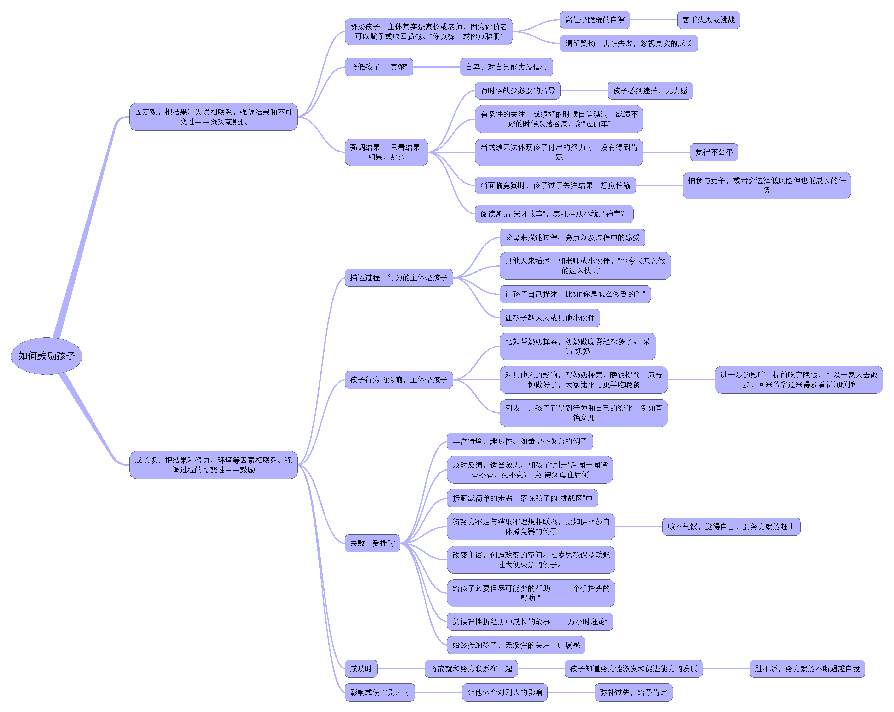

@邹吉林： 这两类人是绝对孤立分类吗？非此即彼？非黑即白？有没有一种中间态？或者说有时候是成长型，有时候是僵固型？
@刘建鸿：肯定不是非黑即白。其实我们每个人都同时具有这两方面，比如，在学习上，估计群里大部分人是成长型思维模式，但在其他方面就不一定，比如交友、尝试其他方面的新事物。
@段新星： 如果说图灵测试可以测出对方是否具有人工智能？那么怎样的测试可以测出对方具备成长型思维模式？
图灵测试：该词来源于计算机科学和密码学的先驱阿兰·麦席森·图灵写于1965年的一篇论文《计算机器与智能》。阿兰·麦席森·图灵1950年设计出这个测试，其内容是，如果电脑能在5分钟内回答由人类测试者提出的一系列问题，且其超过30%的回答让测试者误认为是人类所答，则电脑通过测试。-百度百科
@刘建鸿：关于怎么测出来，德韦克给出了一些简单的量表。如果不那么严格，大家在交流中大致可以借鉴一下。比如：
前两种描述是僵固型思维模式，后两种描述是成长型思维模式。
@刘建鸿：问问他的经历，以及他对经历的看法，无论身处顺境还是逆境。问问他对同龄人的看法，无论比他优秀还是差一些，看看他能不能看到他们背后的积累和努力。
@欧阳：一般而言，思维模式理论强调，人在学习、人际、情绪三个领域内的思维模式会有所不同，比如，在学习领域内容易采取成长型思维模式，但在其他领域却不然。
@欧阳：想问问有没有不需要动用量表，能直接判断自己在这个领域采取的是成长型还是僵固型思维模式？类似小窍门的东西？
@刘建鸿：其实有些方面自己问自己也会有些答案，比如，有些人觉得自己学不会开车、编程、 英语…王荔的例子我觉得是很好的成长型思维模式。
请刘老师补充说明王荔的例子
@张警吁 ：marsh和侯杰泰搞的大鱼小池塘效应跟这个思维模式有关吗？
请刘老师补充。
@拖延症咨询师清风 ： 多谢建鸿老师的精彩分享！关于“建议让孩子自评”，想问一下对成年人适用不适用？我的“拖延症”课程用印象笔记设置了每日核查清单，还有自评分系统，希望能让他们自己对进程保持可视化。
@刘建鸿： 回答一下清风的，自评也适用于成人。其实对拖延症的看法也有这两种类型，有些人觉得自己天生就是这样，“懒癌”，属于僵固型思维模式。有些人则觉得可以用各种方法改进，不管是通过努力，或者其他方法，属于成长型思维模式。
@拖延症咨询师清风：谢谢建鸿。确实德韦克的理论也被《拖延心理学》引用了。我平时分别称之为“患者心态”和“战拖者心态”。
@何津：
@刘建鸿：何津，自然这两种思维模式是可以相互转换的，虽然有相对稳定性，但也可能转换。一开始很开放的，后来刚愎自用。怎么转换我再举一个例子。
对孩子来说，故事也会产生影响。如果总是看神童的故事，时间长了，可能就转成僵固型思维模式。如果多让孩子看遇到困难如何处理的故事（不管人际上，还是做事），就可能转成成长型思维模式。
另外说一下丰富性对思维模式的影响。怎么鼓励孩子学英语，喜欢阅读？
我儿子今年四岁多。我们如果可以提供给孩子丰富的资源，对孩子也是一种鼓励。因为这些东西很有趣，很生动，很丰富。比如，我儿子听英文儿歌，做一下那个新加坡网站上的手工，看原版的动画片，有时候做一些手耳互动的游戏，看原版的童话书，他对英语就不感到痛苦，了，所以现在跟他讲英语、看英文都比较自然，虽然说他讲的还不是很流畅，但是他对英语完全没有抵触或恐惧。他会很自然地想要去看、去听。
丰富性非常重要，数学和语文的丰富性也很重要，这是一种鼓励。让他知道学习本身也有很多的可能。我做了一个鼓励和表扬的pdf，发给大家看看,完全是基于德韦克的这两种分类。（如何鼓励孩子pdf）

@欧阳：我觉得何津有个问题很好，请建鸿回答一下：
@刘建鸿：何津那个问题，我没怎么看懂，不一致是指什么？
@欧阳：@刘建鸿 何津的问题是，如果家长与孩子冲突了，那么，该如何鼓励？仍然坚持以孩子为主体吗？
@刘建鸿： 自然，不可能什么时候都鼓励，但是鼓励可以用的地方比我们一般认为的多很多。
比如你孩子整理房间，平时都不整理的，现在一周整理1天，还有6天没整理。虽然他答应了整理，但其实没做到，这种情况也可以鼓励的。你可以问她那天整理房间怎么做到的，她或许说，手机上定了提醒，让她自己说出成功经验，这也是鼓励。逐步改变孩子的不良状况，但并不是虚假的表扬。
@何津：继续问对待孩子的问题：我想到一个之前碰到的例子，有一个14岁的女孩，在家里和朋友一起用缝衣针打耳洞，位置在耳朵的软骨上。那一次没有发生什么意外，耳洞打得很好，而且后来她经常把这件事当作一件骄傲的事情和周围的人说。自己打耳洞应该是危险的，父母想尽量阻止，但是女孩自己觉得这件事情体现了她的勇敢。这时候父母应该如何处理？
@刘建鸿： 青春期打耳洞这种倒挺有代表性。我非常建议大家在孩子小的时候要有更多沟通和良好的亲子联结。这样到了青春期，也可以更好地沟通。如果你要影响孩子，你还通过良好关系去影响，而非其它。
有些例子我过后再补充一下，可能那张表比较好理解些。
@刘建鸿：@何津 我觉得思维模式比归因理论更深刻。归因区分了能力和努力，思维模式则认为每个人对能力的看法本身就不同。
归因理论（Attribution theory）：人力资源管理和社会心理学的激励理论之一，归因是指观察者为了预测和评价被观察者的行为，对环境加以控制和对行为加以激励或控制，而对被观察者的行为过程所进行的因果解释和推论。-百度百科
@何津：谢谢刘老师！